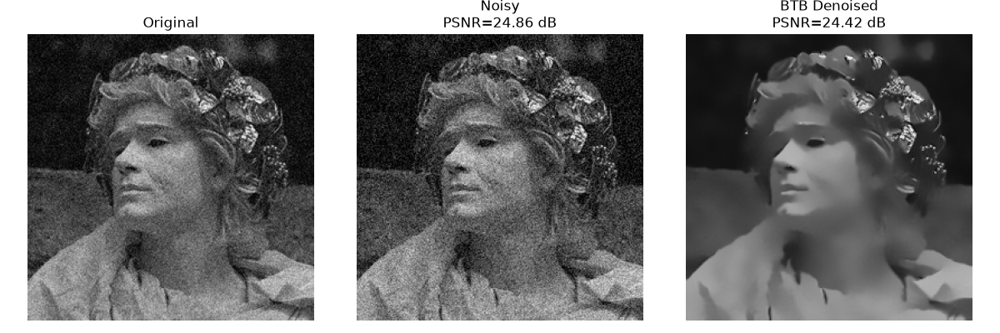
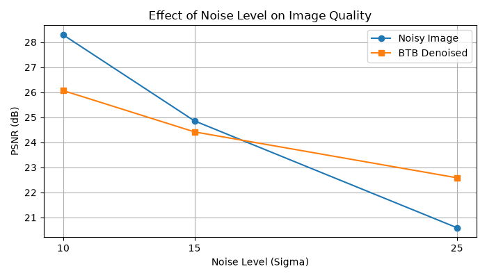
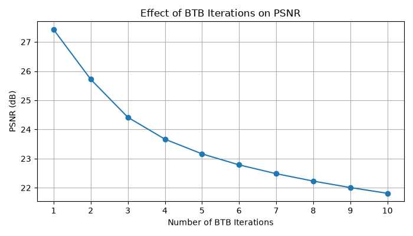

BTB Image Denoising OEL
A method-level reproduction of the Back-to-Basics iterative denoising framework from Pereg (2024), implemented in Python with Non-Local Means as the base denoiser.
Core idea
The BTB framework repeatedly applies a base denoiser and blends the denoised estimate with the previous estimate.
z_(t+1) = f(x_t) x_(t+1) = (1 - μ)x_t + μz_(t+1)
In this reproduction, f(.) is Non-Local Means. The original paper uses pretrained TNRD for its natural-image experiment.
Original → Noisy → BTB Denoised

The displayed BTB result is visually smoother. For this selected reference image, PSNR changes from 24.86 dB for the noisy input to 24.42 dB after BTB + NLM, showing that visual smoothing can still remove reference details and reduce pixel-fidelity metrics.
Noise sensitivity

With the selected fixed parameters, BTB + NLM becomes more useful at the stronger tested noise level, while lower-noise cases can be over-smoothed.
Iteration sensitivity

PSNR falls as repeated NLM-based iterations increase for this image, which is a clear example of over-smoothing.
Evaluation
MSE: lower is better.
PSNR: higher generally means closer numerical similarity to the reference.
SSIM: higher means stronger structural similarity.
Critical finding
BTB is a framework rather than a single fixed filter. Its performance depends on the base denoiser, the noise level, μ, and the number of iterations. This experiment demonstrates why parameter sensitivity must be reported rather than assuming more iterations are always better.
Reference
Deborah Pereg, “Back to basics: Fast denoising iterative algorithm,” Signal Processing, 221, 109482, 2024. DOI: 10.1016/j.sigpro.2024.109482.